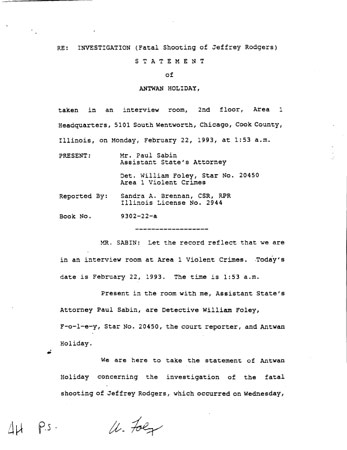

The real killers have confessed, but no one will listen. Let Jerry Gillespie tell his story! Jerry Gillespie deserves a chance to clear his name.Sign the Petition!
After Jerry proclaimed his innocence, Chicago detectives slapped Jerry in the face, grabbed him by the throat, and knocked him to the ground while he was handcuffed to a chair until he falsely confessed to a crime he did not commit.
Even after the two actual murderers wrote out and signed sworn affidavits over ten years later admitting their crimes and corroborating Jerry’s claim that he had nothing to do with the murder, procedural technicalities prevented Jerry from seeking exoneration.
The Chicago Police Department failed Jerry. The legal system failed Jerry. Now is the time to bring Jerry the justice he needs.
February 10, 1993, three men wearing ski masks entered this salon on Chicago’s South Side and coolly executed stylist Jeffrey Rodgers in front of customers and staff. The killing was in retaliation for a gang assassination.
None of the witnesses put Jerry Gillespie at the scene or anywhere near it.
There is no physical evidence linking Gillespie to the crime.
His fingerprints were not at the scene or on the weapon.
They arrested Gillespie along with a Large number of other young men.
The confession fails to mention that the killers wore ski masks,
a detail every witness to the crime recalls.

He names 8 other men.
Both Willie Wilson and Jeffrey Clarkson say that Jerry Gillespie was not a participant.
Nobody, including the courts, is listening.
“What Cooperstown is to baseball, Chicago is to false confessions. It is the Hall of Fame.” -- Barry Scheck, Co-founder of New York’s Innocence Project.
Five of the detectives who worked the case are responsible for a disproportionate number of false confession exonerations in comparison to other groups of detectives in the United States